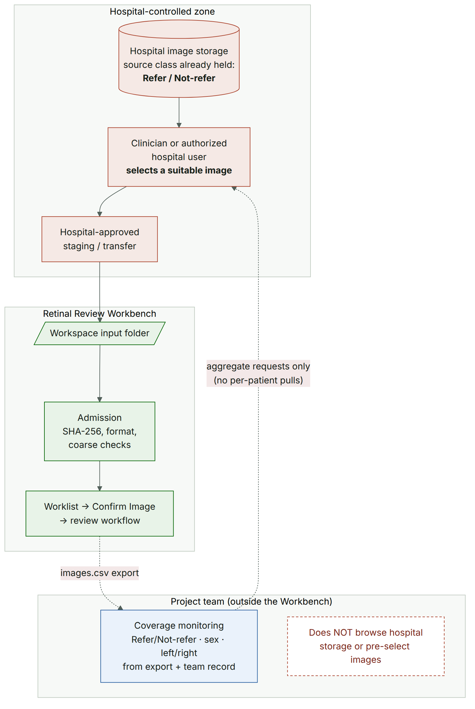
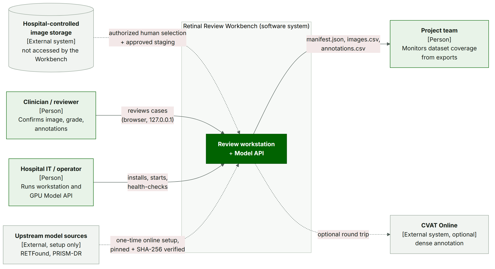
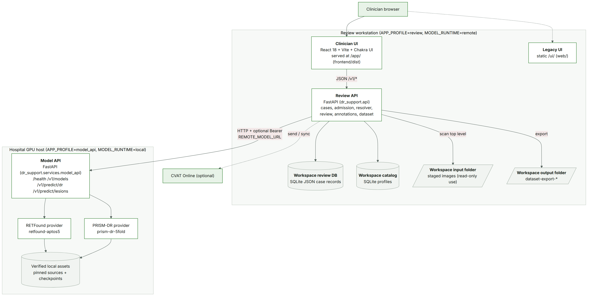
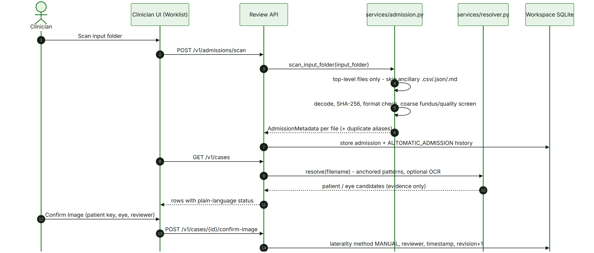
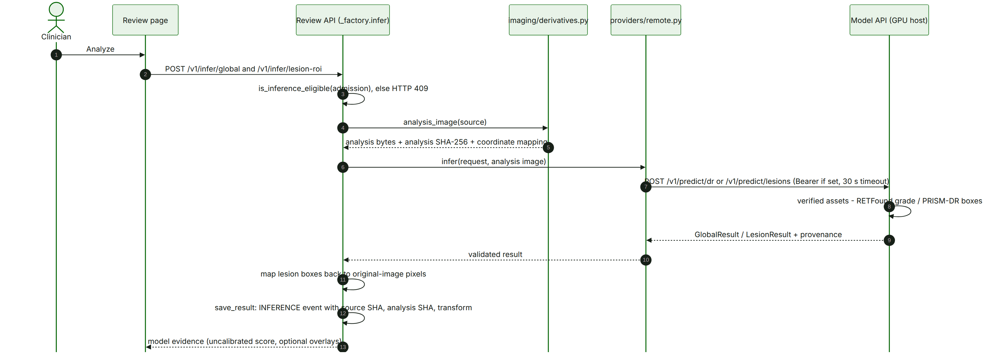
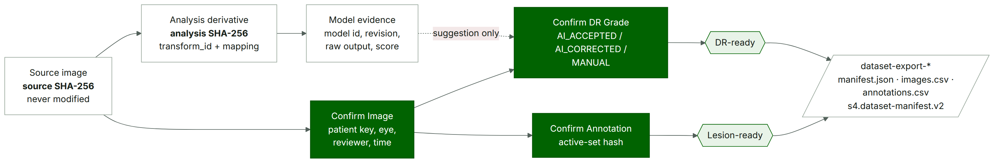
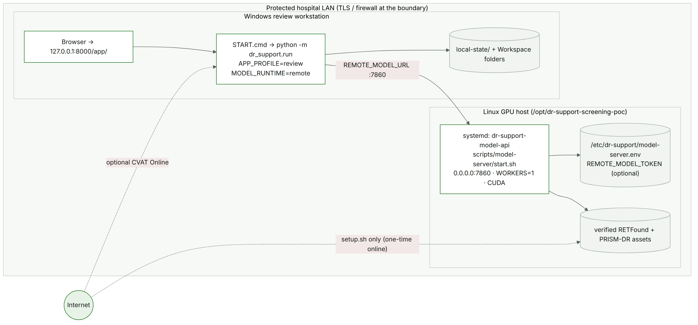

How it is built,
and where to change it
Architecture, image intake boundary, implementation map, and handoff. Verified against main @ ec74af8.
Audience: developers · technical lead · hospital IT
One code base, three runtime profiles.
What it is
- Clinician-controlled review and dataset workstation
- Three human milestones: Confirm Image, Confirm DR Grade, Confirm Annotation
- Optional model evidence: RETFound grade, PRISM-DR lesion ROIs
- Provenance-preserving export: s4.dataset-manifest.v2
- Not diagnosis, referral, or a regulated device
| APP_PROFILE | MODEL_RUNTIME | Role |
|---|---|---|
review | remote | Workstation: UI, Review API, no weights |
model_api | local | GPU host: /health, /v1/models, /v1/predict/* |
full | local | Local demos only |
Invalid combinations fail at startup (dr_support/app.py).
Developer Technical Guide ch. 2, 5 · ADR-0002
Humans select. The team monitors. The software admits.

| Sex | Refer | Not-refer | Total |
|---|---|---|---|
| Male | n | n | n |
| Female | n | n | n |
| Unknown | n | n | n |
| Eye (confirmed) | Refer | Not-refer | Total |
|---|---|---|---|
| Left | n | n | n |
| Right | n | n | n |
| Unknown | n | n | n |
Team monitoring summaries. Planning band: 40–60 % Refer for the POC batch; not prevalence, not a powered sample size. Flags: known sex or eye below 30 %; more than 4 images per patient.
Team Image Sampling Requirements · IMG-SAMP-001, 010, 013, 020, 031, 032, 040, 041, 043, 052, 060, 090 · ADR-0006
Who and what the Workbench talks to.

docs/adr/architecture/01-system-context.mmd
Workstation containers and the GPU Model API.

docs/adr/architecture/02-container.mmd
Pinned and verified versions.
| Backend | Version |
|---|---|
| Python | >=3.11,<3.13 |
| FastAPI · Uvicorn · Pydantic | 0.141.1 · 0.53.0 · 2.13.5 |
| httpx · Pillow · pydicom | 0.28.1 · 12.3.0 · 3.0.1 |
| torch · timm · ultralytics (GPU host) | 2.5.1 · 0.9.2 · 8.4.8 |
| pytest · ruff | 8.4.2 · 0.13.0 |
| Storage | SQLite (JSON case docs) |
| Frontend and docs | Version |
|---|---|
| React · Router | 18.3.1 · 6.30.6 |
| Chakra UI · lucide-react | 2.10.10 · 0.460.0 |
| Vite · TypeScript (strict) | 5.4.21 · 5.9.3 |
| Vitest · jsdom | 2.1.9 · 25.0.1 |
| Docs | Quarto + XeLaTeX · Mermaid · Playwright |
| Models | retfound-aptos5 · prism-dr-5fold |
pyproject.toml · frontend/package-lock.json · Developer Technical Guide ch. 4
Where to start for each feature.
| Feature | Backend | Frontend | Protected |
|---|---|---|---|
| Admission · resolver | services/admission.py · resolver.py | components/worklist/* | Yes |
| Confirm Image | workflow.py confirm_image | ConfirmImageDialog.tsx | Yes |
| Review · overlays | imaging/derivatives.py · presentation.py | ReviewPage.tsx · RetinalCanvas.tsx | Yes |
| RETFound · PRISM-DR | providers/remote.py · services/model_api.py | ReviewPage.tsx | Yes |
| Confirm DR Grade | workflow.py review | ClinicianReviewPage.tsx | Yes |
| Annotations · AI ROI | workflow.py save_human_annotations · lesion_review | AnnotationEditorPage.tsx · LesionActionPopover.tsx | Yes |
| Readiness · export | services/dataset.py | DatasetsPage.tsx | Yes (schema) |
| Autosave · Save & Next · reviewer default | none | AnnotationEditorPage.tsx · CaseNavigation.tsx · reviewerPreference.ts | No |
docs/developer/FEATURE_IMPLEMENTATION_MAP.md · WHERE_TO_CHANGE_WHAT.md
Conservative admission, confirmed by a human.

Top-level scan only; ancillary files skipped; SHA-256 identity; byte-identical files merge into one case with aliases; manual decisions preserved on re-scan.
Four weak fundus signals needed for automatic acceptance; otherwise NEEDS_REVIEW. Non-fundus DICOM → Unsupported modality. Confirm Image sets laterality with method MANUAL.
Developer Technical Guide ch. 6 · docs/adr/architecture/04-image-admission-flow.mmd
Analysis derivative in, provenance out.

| Identity | Hashes | Recorded in |
|---|---|---|
| Source SHA-256 | original admitted bytes · case identity | images.csv image_sha256, admission, audit |
| Analysis SHA-256 | bytes sent to the model (TIFF/DICOM converted) | analysis_derivative, INFERENCE event |
Developer Technical Guide ch. 7 · ADR-0003
Two readiness states, one traceable export.

DR-ready
- provenance · included · fundus accepted · quality OK
- image confirmed
- final grade AI_ACCEPTED / AI_CORRECTED / MANUAL + reviewer + time
Lesion-ready
- same base rules
- Confirm Annotation hash equals active-set hash
- export: manifest.json · images.csv · annotations.csv; no automatic split
Developer Technical Guide ch. 9 · docs/reference/DATASET_MANIFEST.md · ADR-0005
Protected LAN, offline after setup.

GPU host: setup.sh once (online) → start.sh verifies assets, never downloads, fails closed · port 7860 · 1 worker · optional Bearer token (constant-time check).
Workstation: 127.0.0.1:8000 · same-origin mutations only · secrets never in the browser · no absolute paths in exports · no authentication yet (reviewer self-declared).
Developer Technical Guide ch. 12 · Deployment & Operations Manual
Read, reproduce, then change.
Read first
- AGENTS.md: branches, protected areas
- DEVELOPER_HANDOFF.md: ownership checklist
- Developer Technical Guide: internals
- FEATURE_IMPLEMENTATION_MAP · WHERE_TO_CHANGE_WHAT
- docs/adr/: seven decisions
Reproduce
cd frontend · npm test · npm run typecheck · npm run build
python scripts/docs/build_docs.py all
python scripts/docs/check_docs.py
Open owner decisions: sampling N and band, source-class linking, thresholds, counting of ungradable images.
docs/developer/DEVELOPER_HANDOFF.md